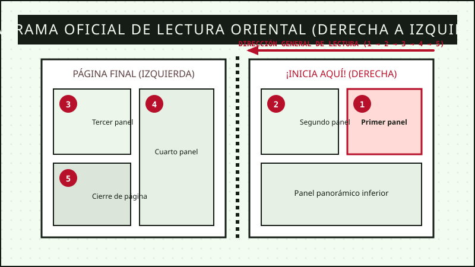

Bienvenido a la referencia técnica definitiva para coleccionistas, lectores novatos y aficionados apasionados del noveno arte japonés. En este compendio encontrarás todo lo necesario para distinguir demografías, evaluar formatos de impresión, dominar el sentido de lectura tradicional y conservar tus volúmenes en condiciones óptimas de biblioteca.
1. Demografías del Manga
Clasificación tradicional por público objetivo editorial en Japón
En la industria editorial japonesa, las revistas de manga no se catalogan primariamente por género temático (terror, comedia, ciencia ficción), sino por la demografía de lectores a la cual va dirigida la publicación serializada original. A continuación, detallamos las cuatro grandes ramas:
Shōnen (少年 - Literalmente "chico joven")
Dirigido primordialmente a un público masculino adolescente entre 12 y 18 años, aunque goza de amplia popularidad transversal en todas las edades. Sus historias enfatizan la superación personal, el compañerismo, el esfuerzo constante (doryoku), la justicia y secuencias de combate dinámicas. Ejemplos de nuestro catálogo: One Piece, Chainsaw Man, Sakamoto Days, Hunter x Hunter y Naruto.
Seinen (青年 - Literalmente "hombre joven")
Orientado a lectores adultos de 18 años en adelante. Aborda tramas complejas, reflexiones morales grises, dilemas sociopolíticos, comedia madura o misterio deductivo. Suelen emplear trazos densos y una narrativa visual cinematográfica. Ejemplos de nuestro catálogo: Mob Psycho 100, One-Punch Man, Los diarios de la boticaria y Uzaki-chan Wants to Hang Out!.
Shōjo (少女 - Literalmente "chica joven")
Enfocado en lectoras adolescentes entre 10 y 18 años. Se caracteriza por un desarrollo emocional introspectivo, enfoque en relaciones interpersonales, romance y dramas de autodescubrimiento. Visualmente destaca por encuadres poéticos, tramas florales y viñetas abiertas que rompen los márgenes tradicionales. Títulos representativos: Fruits Basket, Kimi ni Todoke y obras románticas de importación.
Josei (女性 - Literalmente "mujer adulta")
Destinado a mujeres adultas de 18 años en adelante. Presenta relatos realistas sobre la vida laboral, las relaciones de pareja sin idealizaciones, la madurez, la independencia económica y los conflictos familiares cotidianos con gran empatía y sensibilidad estética. Títulos representativos: Nana, Paradise Kiss y novelas gráficas maduras.
2. Tipos de Edición Física y Formatos
Comparativa técnica para seleccionar la versión adecuada para tu estantería
Las editoriales publican el manga en diversos estándares de tamaño, gramaje de papel y encuadernación. Revisa esta tabla comparativa antes de adquirir tus tomos:
TABLA COMPARATIVA DE FORMATOS EDITORIALES DE MANGA
Tipo de Edición
Dimensiones Estándar
Tipo de Encuadernación
Páginas a Color
Público y Uso Recomendado
Tankōbon (Rústica)
B6 (128 × 182 mm) o C6 (105 × 148 mm)
Tapa blanda con sobrecubierta removible
Poco frecuente (escala de grises)
Lectura cotidiana, portabilidad y precio accesible.
Kanzenban (Edición Perfecta)
A5 (148 × 210 mm)
Tapa semirrígida con acabado texturizado
Incluye todas las páginas a color de revista
Coleccionistas que buscan mayor detalle y fidelidad.
Ómnibus (2 en 1 / 3 en 1)
B6 reforzado o A5 mayor grosor
Lomo ancho cosido con refuerzo
Ocasional en inicios de arco
Ahorro de espacio y lectura maratónica continua.
Edición de Coleccionista
B5 (176 × 250 mm) o cartoné
Tapa dura (Hardcover) con cinta marcapáginas
Páginas a color en papel ilustración satinado
Pieza central de biblioteca, exhibición y archivo.
¿Qué formato conviene más a tu presupuesto?
Si tu meta es leer muchas historias manteniendo un presupuesto controlado, los tomos Tankōbon individuales son la opción ideal. Si buscas conservar la serie para siempre sin deterioro y apreciar los trazos originales del mangaka en gran escala, opta por Kanzenban o Edición de Coleccionista.
3. Cómo Leer Manga (Sentido Oriental)
El flujo visual tradicional de derecha a izquierda
A diferencia de los cómics occidentales, los cómics japoneses se leen en sentido oriental (de derecha a izquierda y de arriba hacia abajo), respetando la orientación con la que fueron ilustrados originalmente para no invertir las viñetas ni deformar la mano diestra de los personajes.

Figura 1: Esquema de navegación de viñetas en páginas dobles de manga japonés original.
Empieza por el lomo derecho: Abre el tomo por lo que en Occidente considerarías la "contraportada". Esa es, en realidad, la portada principal del manga.
Lee la página derecha primero: Cuando abras una doble página, siempre debes inspeccionar y leer la página situada a tu derecha antes de pasar a la izquierda.
Navega las viñetas de derecha a izquierda: En la parte superior de la página, lee la viñeta situada en la esquina superior derecha y luego continúa hacia la izquierda.
Desciende nivel por nivel: Una vez leída la fila superior completa, baja a la fila siguiente repitiendo el mismo recorrido (derecha a izquierda).
Orden de los globos de diálogo: Dentro de una misma viñeta, lee primero el bocadillo o texto que se encuentre más arriba y más a la derecha.
4. Consejos para Conservar y Almacenar Tomos
Preserva el papel, el lomo y la tinta durante décadas
El papel de manga puede oxidarse o sufrir decoloración si se expone a factores ambientales adversos. Sigue estas recomendaciones recomendadas por archiveros:
Protección contra rayos ultravioleta: Nunca ubiques tu estantería frente a ventanas o luz solar directa. Los rayos UV amarillean el papel rápidamente y degradan los pigmentos de las portadas.
Control de humedad relativa y temperatura: Mantén tu habitación con una humedad entre 40% y 50%. La humedad excesiva propicia hongos y deformaciones del cartón.
Uso de fundas libres de ácido (Bags de polipropileno): Almacenar tus tomos en bolsas de polipropileno con cierre autoadhesivo previene la acumulación de polvo y el desgaste por fricción.
Almacenamiento vertical sin sobrepresión: Coloca los tomos siempre de pie en vertical, nunca inclinados para evitar que el lomo se tuerza. No aprietes los tomos de forma excesiva entre sí.
Manipulación con manos limpias y secas: La grasa natural de la piel deja marcas invisibles que con los años oscurecen los bordes del papel. Lávate las manos antes de cada sesión de lectura.
5. Envíos y Preguntas Frecuentes
Respuestas inmediatas sobre compras, despachos en Ecuador y atención directa
¿Cuánto tardan los envíos dentro de Ecuador?
Para Guayaquil y Samborondón, las entregas se realizan en 24 horas laborables. Para Quito, Cuenca y el resto de capitales provinciales, el tiempo promedio es de 48 horas mediante Servientrega o courier certificado.
¿Cómo vienen protegidos los paquetes para evitar daños?
Todos los pedidos se despachan en cajas rígidas multicapa con cantoneras de poliestireno antichoque y cada tomo se sella individualmente con plástico alveolar hermético contra humedad.
¿Todos los mangas están en idioma español?
Sí, todos los títulos de nuestro catálogo general corresponden a traducciones oficiales al español licenciadas por editoriales certificadas (traducción neutra o de España según la editorial de origen). También disponemos de tomos en japonés original bajo pedido.
¿Qué métodos de pago aceptan?
Aceptamos transferencias bancarias locales (Banco Pichincha, Banco Guayaquil, Produbanco), tarjetas de débito/crédito nacionales e internacionales y pagos en efectivo contra entrega en Guayaquil.
¿TIENES DUDAS SOBRE UN TOMO ESPECÍFICO? CONTÁCTANOS
Envía tu consulta técnica a nuestro equipo de libreros y te responderemos en menos de 2 horas hábiles.
6. Enlaces y Recursos de Referencia
Portales recomendados para profundizar en la historia del manga